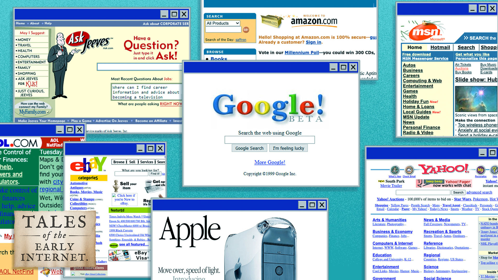
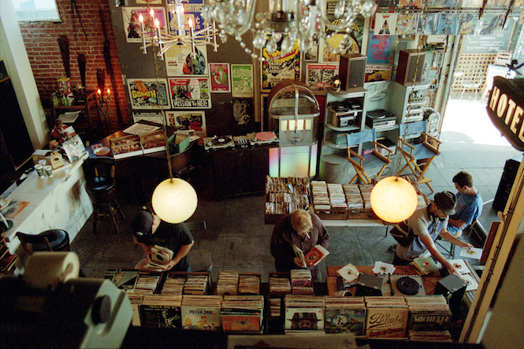

January 21, 2021
HOW THE INTERNET HAS CHANGED THE WAY WE RECEIVE AND PERCEIVE INFORMATION
As we mentioned in class today, the internet has provided everyone with a “feed,” in which information is fed to them. When the internet first started out, there was this exploratory energy that allowed people to “surf” the web and discover something new. Most of the time now when people are “surfing” the internet, they are actually just following a stream of information that has been curated for them.
This makes it hard for people to form their own opinions. We are seeing this concept grow especially on sites like Twitter and TikTok, where, based on previous interactions with the app, your home page is filled with things that you may like. These sites form a personality for you and put you into one or more categories, getting you to a place where you are then able to be formed into who they want you to be.
We’ve also seen a change in the way we consume all types of media. Take, for instance, the music industry. Once upon a time, you had to sift through boxes of records and hope you would find the one that included that one song you heard on the radio a month ago. And still, you were purchasing a record with songs on it that you had never heard before. Because you bought this whole record, you would sit through the entire thing and gauge whether you liked each song. Nowadays, you can instantly know what any song that’s playing is called and you can hear any song that you want with the click of a button. 30 seconds in you could decide you hate it and move on with your life. The attention span is gone and you’re already on to something new.
Many people were talking about how they use sites like TripAdvisor or Yelp or Rotten Tomatoes to help decide whether or not they want to do something. (Visit a city, eat at a restaurant, or watch a movie) The internet has introduced a world where we give more weight to the opinions of online strangers rather than trying something for ourselves. While this can be beneficial to narrow down your options or to know what is worth your time, this diminishes the fact that humans are all different and have different preferences. The sushi restaurant that you hated could be somebody else’s favorite meal.
The internet is a great tool – we must remember to use it to explore and to form our own opinions.